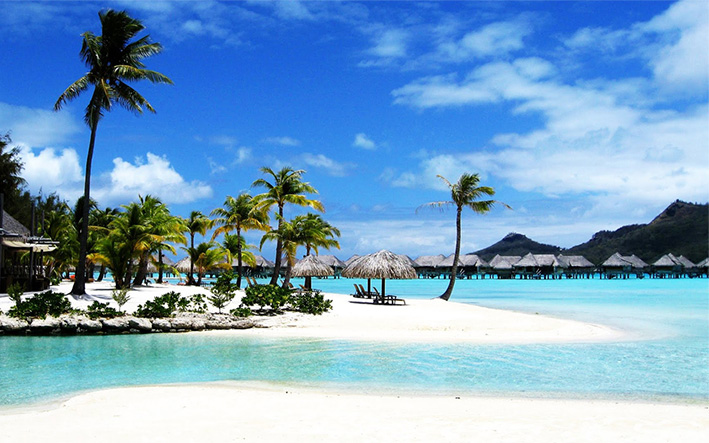
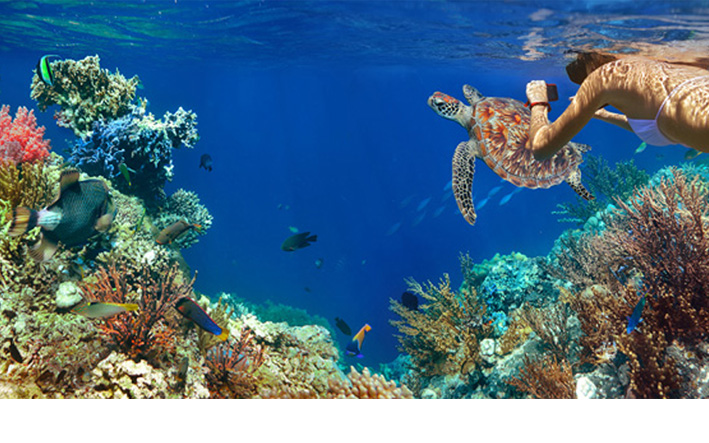
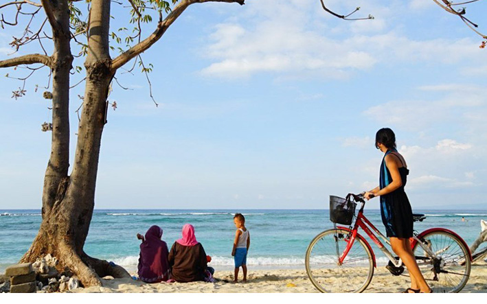
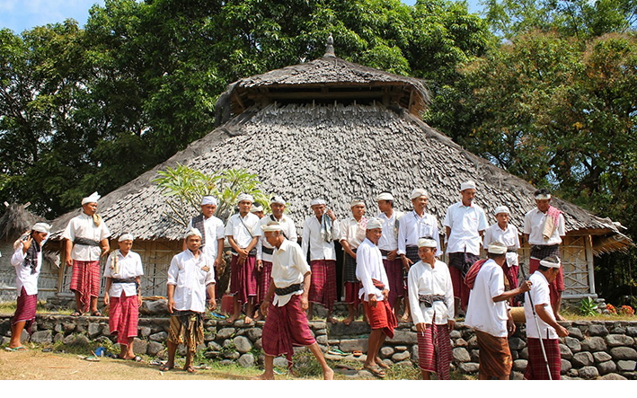
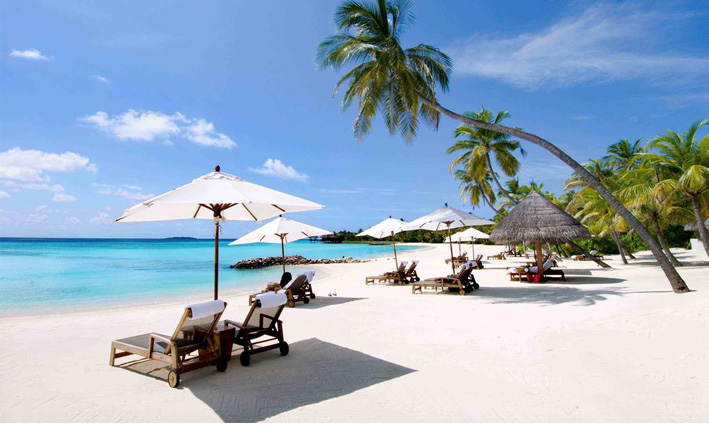

Gili Trawangan memendam memory
Siapa yang tidak terpukau dengan keindahan Gili Trawangan? Lanskap pulau yang masih alami, bersih, dan luar biasa elok membuat banyak wisatawan ingin merasakan sensasi liburan di pulau ini. Apalagi, menurut survei yang dihimpun oleh salah satu situs perjalanan terbesar di dunia, Gili Trawangan merupakan pulau wisata paling terjangkau dari segi biaya pengeluaran per harinya (termasuk penginapan, makanan, layanan pijat, dan lain-lain), dibandingkan dengan pulau wisata lain yang ada di Asia Tenggara, bahkan Pulau Bali.
Lalu, apa daya tarik lain yang membuat Gili Trawangan berhasil menandingi popularitas Pulau Bali hingga banyak wisatawan mulai beralih mengunjungi pulau ini? Simak saja ulasannya berikut ini:
1. Panorama pantai nan menakjubkan

Pulau yang juga lazim disebut "Gili T" oleh para turis ini terkenal dengan panorama pantai yang eksotis dan menawan. Percayalah, sejauh mata memandang ke segala arah, Anda akan terpukau oleh perpaduan langit biru, air laut berwarna pirus berkilau, dan garis pantai berpasir putih tanpa batas! Bukan hanya itu, Anda juga dapat menikmati matahari terbit dan terbenam sekaligus dalam satu hari.
Pasalnya, Gili Trawangan memiliki pantai yang menghadap ke barat maupun timur. Pantainya pun memiliki pesona yang berbeda di setiap sisinya. Pantai yang berada di timur lebih ramai oleh wisatawan dan penduduk lokal karena dekat dengan dermaga dan merupakan pusat aktivitas ekonomi di pulau tersebut. Berbeda dengan pantai di sisi barat yang lebih sepi.
Meski sepi, tapi bukan berarti Anda bakal kekurangan pilihan aktivitas. Apalagi yang lebih menggiurkan daripada bersantai di tempat tidur gantung tepi pantai sembari membaca buku atau sekadar menikmati suara ombak dan sayup angin? Sewaktu-waktu ingin berenang, Anda tinggal melangkah karena laut adalah pekarangan Anda! Kala sore tiba, silakan duduk manis menanti matahari terbenam bersama orang tercinta.
2. Lihatlah, bawah laut yang memukau

Daya tarik lainnya yang dimiliki oleh Gili Trawangan adalah pesona laut yang sangat menakjubkan. Air lautnya yang jernih membuat berbagai biota yang hidup di dalamnya begitu mudah terlihat. Sayang sekali bila Anda ke Gili Trawangan tanpa mencoba sensasi snorkeling atau diving di sekitar pulau ini.
Arus laut yang tenang akan menambah kenikmatan Anda saat menyelam. Di sini, Anda akan menemui kumpulan hewan laut yang cantik, seperti clown fish, atau biasa disebut ikan nemo. Tidak hanya itu, Anda juga dapat melihat terumbu karang aneka warna yang dapat menjadi obat penghilang stres selama menjalani kehidupan sehari-hari di tempat tinggal Anda.
3. Terbebas dari kemacetan dan polusi kendaraan

Sumpek dengan polusi kendaraan bermotor di kota tempat Anda tinggal? Mungkin sudah waktunya bagi Anda untuk mengunjungi Gili Trawangan. Dijamin, Anda tidak akan menemui kendaraan bermotor di seluruh sudut pulau, sebab kendaraan bermotor dilarang keras beroperasi di pulau ini. Sebagai gantinya, transportasi yang digunakan baik oleh penduduk lokal dan wisatawan untuk mengitari pulau adalah sepeda dan cidomo. Cidomo adalah kereta kuda khas Lombok, Nusa Tenggara Barat.
Rata-rata, penginapan di Gili T menyediakan fasilitas rental sepeda dengan tarif beragam, mulai dari Rp40.000 hingga Rp75.000 per hari. Sedangkan cidomo dipatok sekitar Rp75.000 sampai Rp100.000 untuk satu kali perjalanan, tergantung jarak yang hendak ditempuh. Kereta ini bisa memuat hingga enam penumpang dan mudah ditemukan di area pusat pulau, tepatnya sekitar pasar seberang dermaga.
4. Penduduk yang ramah dan bersahabat

Selain pesona alamnya yang menakjubkan, Gili Trawangan juga dihuni oleh penduduk lokal yang ramah. Berbeda dengan kota besar di mana warganya terlalu individualis, penduduk Gili Trawangan siap menyapa dengan bersahabat ketika Anda mengelilingi pulau ini. Hal tersebut tentu membuat Anda semakin nyaman dan betah berada di Gili Trawangan meskipun tinggal berhari-hari.
Bila Anda tak tahu arah menuju penginapan atau tempat tertentu, jangan segan untuk bertanya pada warga lokal yang Anda temui di sekitar. Tanpa ragu mereka akan membantu menunjukkan arah menuju destinasi Anda.
5. Pasir putih yang menghampar

Ingin menghabiskan waktu di penginapan? Maka Gili Trawangan adalah pilihan destinasi yang tepat untuk liburan Anda. Mengapa? Karena di sini banyak pilihan hotel, resor, maupun vila yang berlokasi di tepi pantai. Bahkan dari jendela kamar hotel, Anda sudah dapat menikmati indahnya sunset di kaki langit! Sebut saja, Hotel Ombak Sunset yang terletak di tepi barat pulau. Hotel berbintang empat ini menghadirkan pemandangan sore hari yang menakjubkan.
Bagi Anda yang ingin relaksasi dengan suasana yang lebih tenang dan asri, La Cocoteraie Ecolodge bisa menjadi pilihan untuk bermalam. Resort ini menawarkan konsep glamping atau glamour camping, di mana Anda menginap di sebuah tenda mewah dengan nuansa khas tropis pinggir pantai ditemani pasir putih dan pohon kelapa yang rindang.
La Cocoteraie Ecolodge, yang terdiri dari 8 tenda pribadi, memiliki fasilitas mewah seperti WiFi gratis, restoran, dan peralatan snorkeling gratis. Peralatan selam ini bisa Anda gunakan secara gratis untuk menikmati pesona bawah laut di perairan sekitar tiga gili (Gili Trawangan, Gili Meno, Gili Air). Lokasinya yang jauh dari pusat keramaian dan ditambah suasana penginapan ala padepokan tepi pantai menjadikan tempat ini sangat pas bagi Anda yang ingin menikmati keindahan alam bersama sahabat, pasangan, atau keluarga tercinta.